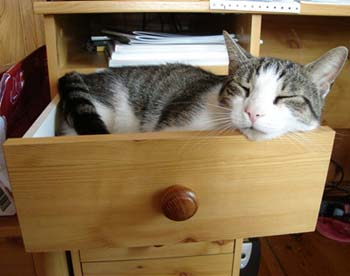
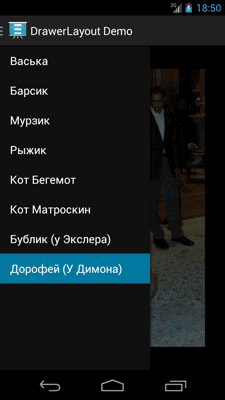
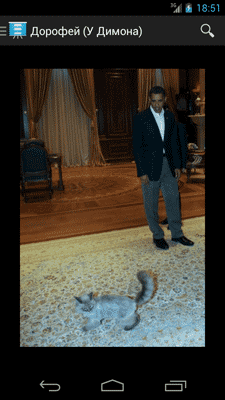
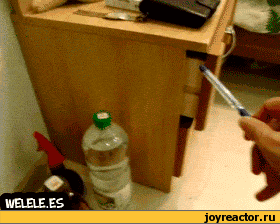

/* Моя кошка замечательно разбирается в программировании. Стоит мне объяснить проблему ей - и все становится ясно. */
John Robbins, Debugging Applications, Microsoft Press, 2000

/* Моя кошка замечательно разбирается в программировании. Стоит мне объяснить проблему ей - и все становится ясно. */
John Robbins, Debugging Applications, Microsoft Press, 2000

На конференции Google I/O 2013 был представлен новый способ навигации при помощи новой разметки android.support.v4.widget.DrawerLayout, который сразу вызвал повышенный интерес у разработчиков. Давайте изучим его и мы.
По английски drawer обозначает выдвижной ящик и данная разметка ведёт себя схожим образом. Пользователь может лёгким движением руки с края экрана выдвинуть панель навигации для быстрого переключения на другое содержимое, например, фрагмент с новым рисунком.
DrawerLayout входит в состав библиотеки Support Library v4 (release 13), который вышел в мае 2013 года и используется по умолчанию в проектах, созданных в ADT 22.0.
Создадим новый проект с минимальной версией API 14. Можно использовать и более старые версии, но тогда придётся отказаться от некоторых новых методов, а также использовать некоторые методы из другого пакета совместимости.
Начнём с разметки. Берётся стандартная разметка, состоящая из FrameLayout и ListView, и оборачивается дополнительно новым родительским элементом android.support.v4.widget.DrawerLayout. На панели инструментов данного компонента нет, поэтому придётся писать код вручную.
<android.support.v4.widget.DrawerLayout xmlns:android="http://schemas.android.com/apk/res/android"
android:id="@+id/drawer_layout"
android:layout_width="match_parent"
android:layout_height="match_parent" >
<!-- The main content view -->
<FrameLayout
android:id="@+id/content_frame"
android:layout_width="match_parent"
android:layout_height="match_parent" />
<!-- The navigation drawer -->
<ListView
android:id="@+id/left_drawer"
android:layout_width="240dp"
android:layout_height="match_parent"
android:layout_gravity="start"
android:background="#111"
android:choiceMode="singleChoice"
android:divider="@android:color/transparent"
android:dividerHeight="0dp" />
</android.support.v4.widget.DrawerLayout>
В нашем примере DrawerLayout является корневым элементом разметки. Внутри него используется разметка, которая служит контейнером для фрагментов. Второй компонент ListView служит содержимым для навигации.
Необходимо запомнить несколько важных деталей:
Основной элемент для вывода информации (у нас это FrameLayout) должен быть первым дочерним элементом DrawerLayout. Это связано расположением элементов в Z-порядке.
Высота и ширина основного элемента должна соответствовать высоте и ширине родительского элемента.
Элемент навигации (у нас это ListView) должен использовать атрибут android:layout_gravity. Рекомендуется использовать для него значение start. В этом случае панель навигации будет находиться слева или справа в зависимости от языка (европейский или арабский).
Ширина панели навигации должна быть задана в dp, а высота соответствовать родительскому элементу. Ширина не должна быть больше чем 320dp, чтобы пользователь всегда мог видеть часть основного содержимого экрана. Для минимальной ширины рекомендуют использовать 240dp.
Обычно в DrawerLayout для навигации используют список элементов ListView, который необходимо заполнить через адаптер, например, ArrayAdapter или SimpleCursorAdapter.
Допустим, мы подготовили строковый массив:
<string-array name="cats_array_ru">
<item>Васька</item>
<item>Барсик</item>
<item>Мурзик</item>
<item>Рыжик</item>
<item>Кот Бегемот</item>
<item>Кот Матроскин</item>
<item>Бублик (у Экслера)</item>
<item>Дорофей (у Димона)</item>
</string-array>
Заполним список именами котов:
public class MainActivity extends Activity {
private String[] mCatTitles;
private ListView mDrawerList;
...
@Override
public void onCreate(Bundle savedInstanceState) {
super.onCreate(savedInstanceState);
setContentView(R.layout.activity_main);
mCatTitles = getResources().getStringArray(R.array.cats_array_ru);
mDrawerList = (ListView) findViewById(R.id.left_drawer);
// Set the adapter for the list view
mDrawerList.setAdapter(new ArrayAdapter<String>(this,
R.layout.drawer_list_item, mCatTitles));
// Set the list's click listener
mDrawerList.setOnItemClickListener(new DrawerItemClickListener());
...
}
}
После заполнения списка именами вызываем обработчик нажатий на элементах списка (setOnItemClickListener()) для изменения содержимого основного экрана в зависимости от выбранного элемента.
Когда пользователь щелкает на элементе списка, то система вызывает метод onItemClick() из интерфейса ListView.OnItemClickListener, переданного в setOnItemClickListener().
Код, который будет здесь выполняться, зависит от логики вашей программы. Например, мы можем вставлять различные фрагменты в контейнер FrameLayout через его идентификатор R.id.content_frame ID:
/* The click listner for ListView in the navigation drawer */
private class DrawerItemClickListener implements ListView.OnItemClickListener {
@Override
public void onItemClick(AdapterView<?> parent, View view, int position, long id) {
selectItem(position);
}
}
private void selectItem(int position) {
// update the main content by replacing fragments
Fragment fragment = new CatFragment();
Bundle args = new Bundle();
args.putInt(CatFragment.ARG_CAT_NUMBER, position);
fragment.setArguments(args);
FragmentManager fragmentManager = getFragmentManager();
fragmentManager.beginTransaction().replace(R.id.content_frame, fragment).commit();
// update selected item and title, then close the drawer
mDrawerList.setItemChecked(position, true);
setTitle(mCatTitles[position]);
mDrawerLayout.closeDrawer(mDrawerList);
}
@Override
public void setTitle(CharSequence title) {
mTitle = title;
getActionBar().setTitle(mTitle);
}
Для прослушки событий выдвигания и задвигания панели используется метод setDrawerListener() вашего компонента DrawerLayout, которому нужно передать DrawerLayout.DrawerListener. У данного интерфейса имеются такие события как onDrawerOpened() и onDrawerClosed().
Кроме стандартного способа выдвижения панели движением пальца от края экрана к середине, можно выдвинуть панель путём нажатия на значок программы в панели действий ActionBar. В этом случае вы можете использовать класс ActionBarDrawerToggle, который сохраняет возможности DrawerLayout.DrawerListener для обработки движения пальцем по экрану и добавляет свой способ управления через значок.
При выдвижении и задвигании панели навигации следует следить за заголовком активности, чтобы он соответствовал текущему состоянию экрана.
У пользователя должна быть возможность открыть панель навигации не только жестом Свайп - движением от левого края экрана, но и с помощью касания значка в заголовке активности. При этом у значка должен быть специальный индикатор, подсказывающий о наличии панели навигации. Всё это реализуется с помощью описанного выше класса ActionBarDrawerToggle.
Вам нужно создать экземпляр данного класса с конструктором со следующими аргументами:
Активность, которая является хостом для панели
класс DrawerLayout
растровый ресурс, который будет использоваться в качестве индикатора (можно скачать стандартные значки для темной и светлой темы)
.
строковый ресурс, описывающий действие выдвижения (accessibility)
строковый ресурс, описывающий действие закрытия (accessibility).
Далее следует вызвать ActionBarDrawerToggle в нескольких местах жизненного цикла активности, а именно в onPostCreate() и onConfigurationChanged().
Полный код приложения:
package ru.alexanderklimov.drawerlatyoutdemo;
import java.util.Locale;
import android.app.Activity;
import android.app.Fragment;
import android.app.FragmentManager;
import android.app.SearchManager;
import android.content.Intent;
import android.content.res.Configuration;
import android.os.Bundle;
import android.support.v4.app.ActionBarDrawerToggle;
import android.support.v4.view.GravityCompat;
import android.support.v4.widget.DrawerLayout;
import android.view.LayoutInflater;
import android.view.Menu;
import android.view.MenuInflater;
import android.view.MenuItem;
import android.view.View;
import android.view.ViewGroup;
import android.widget.AdapterView;
import android.widget.ArrayAdapter;
import android.widget.ImageView;
import android.widget.ListView;
import android.widget.Toast;
public class MainActivity extends Activity {
private DrawerLayout mDrawerLayout;
private ListView mDrawerList;
private ActionBarDrawerToggle mDrawerToggle;
private CharSequence mDrawerTitle;
private CharSequence mTitle;
private String[] mCatTitles;
@Override
protected void onCreate(Bundle savedInstanceState) {
super.onCreate(savedInstanceState);
setContentView(R.layout.activity_main);
mTitle = mDrawerTitle = getTitle();
mCatTitles = getResources().getStringArray(R.array.cats_array_ru);
mDrawerLayout = (DrawerLayout) findViewById(R.id.drawer_layout);
mDrawerList = (ListView) findViewById(R.id.left_drawer);
// set a custom shadow that overlays the main content when the drawer opens
mDrawerLayout.setDrawerShadow(R.drawable.drawer_shadow, GravityCompat.START);
// set up the drawer's list view with items and click listener
mDrawerList.setAdapter(new ArrayAdapter<String>(this,
R.layout.drawer_list_item, mCatTitles));
mDrawerList.setOnItemClickListener(new DrawerItemClickListener());
// enable ActionBar app icon to behave as action to toggle nav drawer
getActionBar().setDisplayHomeAsUpEnabled(true);
getActionBar().setHomeButtonEnabled(true);
// ActionBarDrawerToggle ties together the the proper interactions
// between the sliding drawer and the action bar app icon
mDrawerToggle = new ActionBarDrawerToggle(
this, /* host Activity */
mDrawerLayout, /* DrawerLayout object */
R.drawable.ic_drawer, /* nav drawer image to replace 'Up' caret */
R.string.drawer_open, /* "open drawer" description for accessibility */
R.string.drawer_close /* "close drawer" description for accessibility */
) {
public void onDrawerClosed(View view) {
getActionBar().setTitle(mTitle);
invalidateOptionsMenu(); // creates call to onPrepareOptionsMenu()
}
public void onDrawerOpened(View drawerView) {
getActionBar().setTitle(mDrawerTitle);
invalidateOptionsMenu(); // creates call to onPrepareOptionsMenu()
}
};
mDrawerLayout.setDrawerListener(mDrawerToggle);
if (savedInstanceState == null) {
selectItem(0);
}
}
@Override
public boolean onCreateOptionsMenu(Menu menu) {
MenuInflater inflater = getMenuInflater();
inflater.inflate(R.menu.main, menu);
return super.onCreateOptionsMenu(menu);
}
/* Called whenever we call invalidateOptionsMenu() */
@Override
public boolean onPrepareOptionsMenu(Menu menu) {
// If the nav drawer is open, hide action items related to the content view
boolean drawerOpen = mDrawerLayout.isDrawerOpen(mDrawerList);
menu.findItem(R.id.action_websearch).setVisible(!drawerOpen);
return super.onPrepareOptionsMenu(menu);
}
@Override
public boolean onOptionsItemSelected(MenuItem item) {
// The action bar home/up action should open or close the drawer.
// ActionBarDrawerToggle will take care of this.
if (mDrawerToggle.onOptionsItemSelected(item)) {
return true;
}
// Handle action buttons
switch(item.getItemId()) {
case R.id.action_websearch:
// create intent to perform web search for this cat
Intent intent = new Intent(Intent.ACTION_WEB_SEARCH);
intent.putExtra(SearchManager.QUERY, getActionBar().getTitle());
// catch event that there's no activity to handle intent
if (intent.resolveActivity(getPackageManager()) != null) {
startActivity(intent);
} else {
Toast.makeText(this, R.string.app_not_available, Toast.LENGTH_LONG).show();
}
return true;
default:
return super.onOptionsItemSelected(item);
}
}
/* The click listner for ListView in the navigation drawer */
private class DrawerItemClickListener implements ListView.OnItemClickListener {
@Override
public void onItemClick(AdapterView<?> parent, View view, int position, long id) {
selectItem(position);
}
}
private void selectItem(int position) {
// update the main content by replacing fragments
Fragment fragment = new CatFragment();
Bundle args = new Bundle();
args.putInt(CatFragment.ARG_CAT_NUMBER, position);
fragment.setArguments(args);
FragmentManager fragmentManager = getFragmentManager();
fragmentManager.beginTransaction().replace(R.id.content_frame, fragment).commit();
// update selected item and title, then close the drawer
mDrawerList.setItemChecked(position, true);
setTitle(mCatTitles[position]);
mDrawerLayout.closeDrawer(mDrawerList);
}
@Override
public void setTitle(CharSequence title) {
mTitle = title;
getActionBar().setTitle(mTitle);
}
/**
* When using the ActionBarDrawerToggle, you must call it during
* onPostCreate() and onConfigurationChanged()...
*/
@Override
protected void onPostCreate(Bundle savedInstanceState) {
super.onPostCreate(savedInstanceState);
// Sync the toggle state after onRestoreInstanceState has occurred.
mDrawerToggle.syncState();
}
@Override
public void onConfigurationChanged(Configuration newConfig) {
super.onConfigurationChanged(newConfig);
// Pass any configuration change to the drawer toggls
mDrawerToggle.onConfigurationChanged(newConfig);
}
/**
* Fragment that appears in the "content_frame", shows a cat
*/
public static class CatFragment extends Fragment {
public static final String ARG_CAT_NUMBER = "cat_number";
public CatFragment() {
// Empty constructor required for fragment subclasses
}
@Override
public View onCreateView(LayoutInflater inflater, ViewGroup container,
Bundle savedInstanceState) {
View rootView = inflater.inflate(R.layout.fragment_cat, container, false);
int i = getArguments().getInt(ARG_CAT_NUMBER);
// имена котов на англ. для нахождения имен файлов
String catname = getResources().getStringArray(R.array.cats_array)[i];
String catnameTitle = getResources().getStringArray(R.array.cats_array_ru)[i];
int imageId = getResources().getIdentifier(catname.toLowerCase(Locale.ROOT),
"drawable", getActivity().getPackageName());
((ImageView) rootView.findViewById(R.id.image)).setImageResource(imageId);
getActivity().setTitle(catnameTitle);
return rootView;
}
}
}
Creating a Navigation Drawer - пример из документации. Там же можно скачать исходник, послужившей основой для статьи.
Navigation Drawer - еще одна статья из документации.
 
